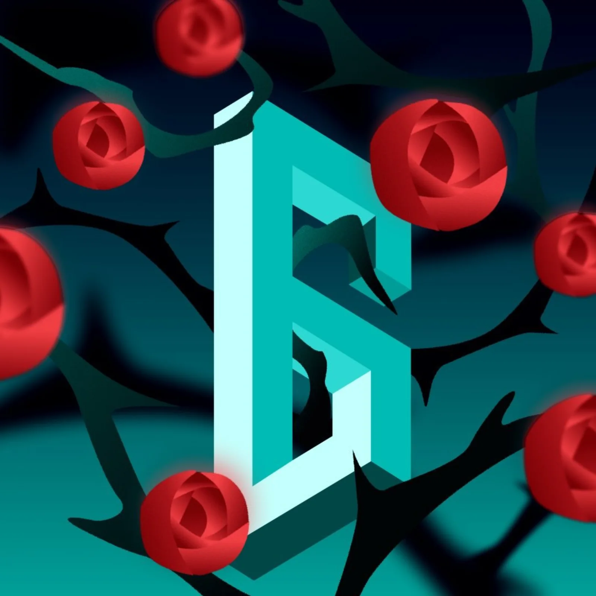
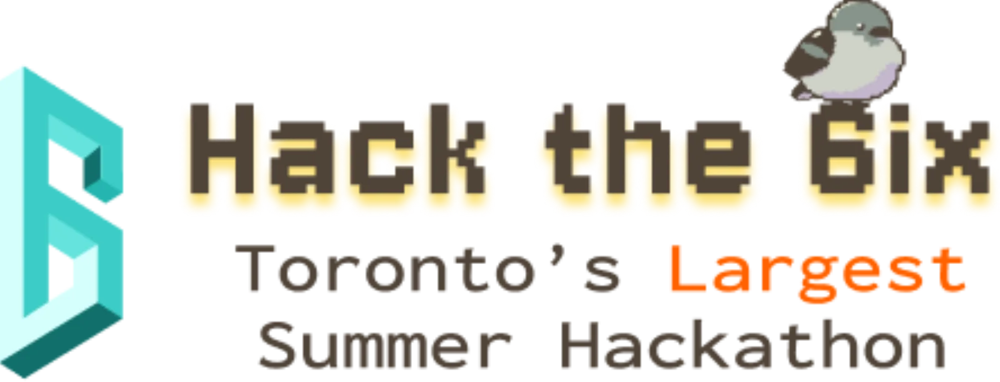
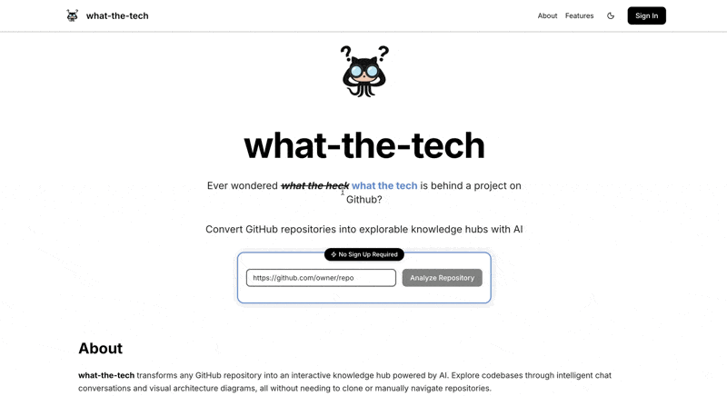
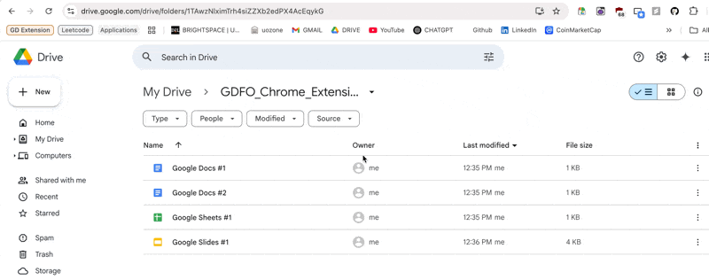
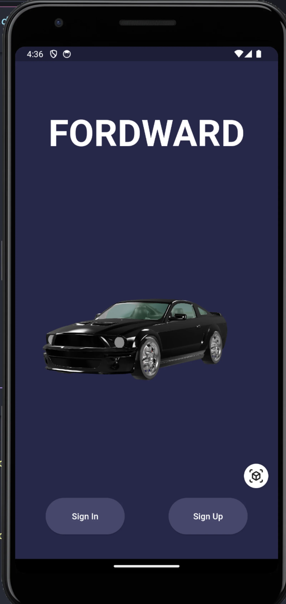
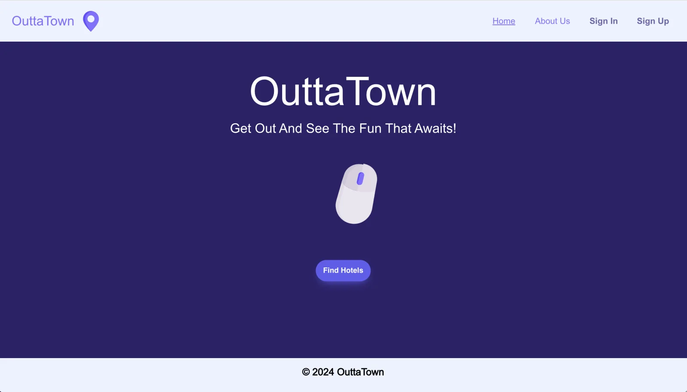
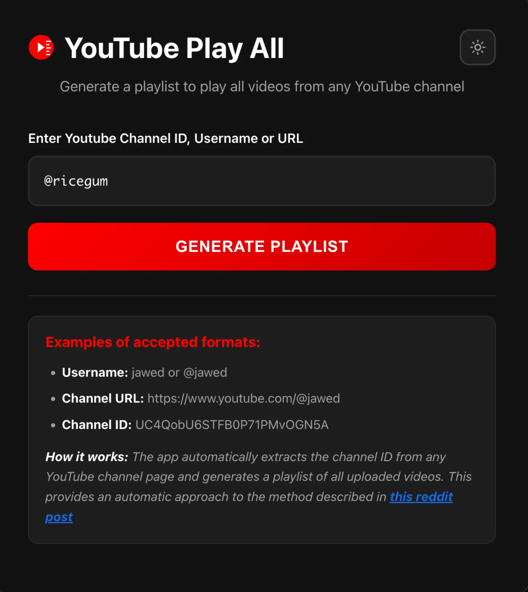
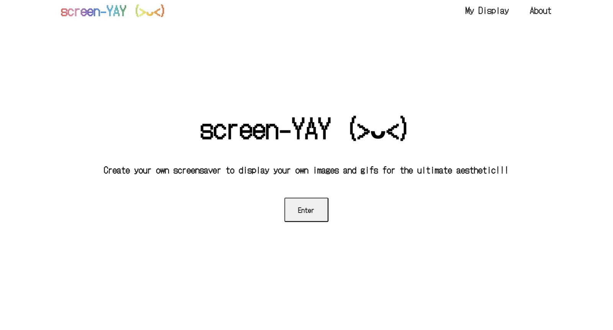

Here's a collection of some of my personal projects and contributions:
In the spotlight! My most proud and enjoyable projects:
vgmu is an ad-free mobile video game music
player for Android and iOS. Discover soundtracks, search and
browse albums, stream music online, organize a local library,
build playlists, and download tracks for offline playback — all
without email, accounts, or subscriptions. It also supports
full-screen playback, background and lock-screen controls,
customizable themes, and Discord Rich Presence.
vgmu is closed source, so the linked public repository is the
production release hub with binaries, documentation, and user
guides rather than the application source code.
Custos is a terminal-native security sidekick
that checks outgoing Git changes before they leave your machine.
At the pre-push boundary, it extracts the outgoing diff and checks
changed lines with deterministic security rules, using nearby
context and limited dependency information while excluding or
redacting sensitive files and recognizable secrets.
Backboard AI reviews that bounded context to add grounded
explanations and patch suggestions, while deterministic rules
remain the enforcement foundation. MongoDB Atlas records findings
and audit events such as blocked pushes, applied patches, and
approved or denied overrides; Auth0's Device Authorization Flow
authenticates enabled overrides, and custos doctor
checks the Git, Auth0, MongoDB, and Backboard integrations.
Hackathon hosted by Hack the 6ix 2026


What the Tech! is a web app that analyzes any
public GitHub repository and visualizes its technology stack,
languages, frameworks, APIs, and more. Built for users to quickly
identify and understand open source projects! It will also
reference and explain how the technology is used in the project
itself.
Google Gemini powers the chatbot, helping users
ask questions about a repository and receive context-aware
answers grounded in its code. It also helps generate the
interactive Mermaid UI, visualizing the project's
infrastructure, architecture, and dependencies.

Hackathon hosted by uOttaHack 8
Google Drive File Organizer is a Chrome Extension that automatically organizes your cluttered Drive by renaming and sorting files based on metadata, dates, and context. Choose from various sorting presets within the extension to use AI directly in your Google Drive workspace!


Fordward is a mobile application to help
track and plan out EVs based on vehicle models designed by
Ford. While taking a drive, this app allows you to locate
nearby charging stations, monitor battery life, enjoy group
listening with friends and much more!
Take a leap forward with Fordward!
Hackathon hosted by uOttahack 6
Outtatown is a web application that helps
users find and book hotel rooms across multiple hotel chains.
Built with the PERN stack, this app utilizes relational
databases to allow you to search for accommodations by
location, check room availability, make bookings, and manage
reservations all in one place!
Find your perfect getaway with Outtatown!


YouTube Play All is a web application used by 4,000+ users to generate playlist URLs containing all uploaded videos from any YouTube channel. Enter a channel ID, username, @handle, or URL to resolve the channel and recreate YouTube's removed "Play All" workflow.

screen-YAY is a customizable screensaver application that allows users to display their own images and GIFs for a personalized aesthetic experience. Whether for deep studying sessions or to just show off desk setups, screen-YAY can do it!